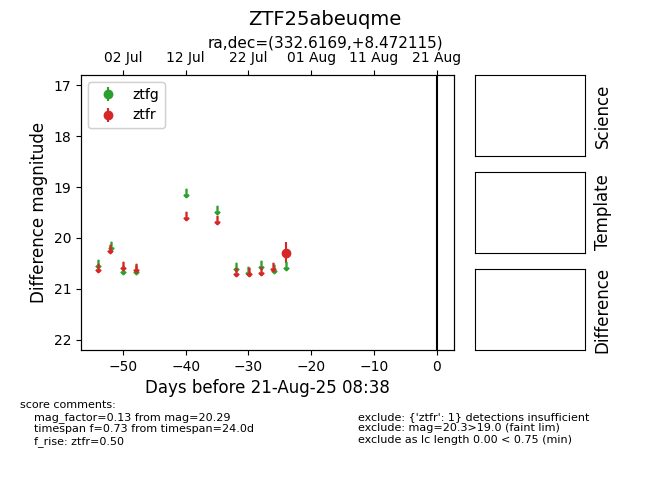

Target ZTF25abeuqme at 2025-08-21 08:38, see:
FINK: fink-portal.org/ZTF25abeuqme
Lasair: lasair-ztf.lsst.ac.uk/objects/ZTF25abeuqme
ALeRCE: alerce.online/object/ZTF25abeuqme
alt names
ZTF25abeuqme (ztf,alerce)
coordinates:
equatorial (ra, dec) = (332.6169,+8.47211)
galactic (l, b) = (69.5802,-37.21084)
photometry
last ztfr=20.29
1 ztfr detections
